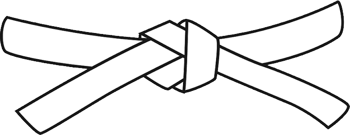
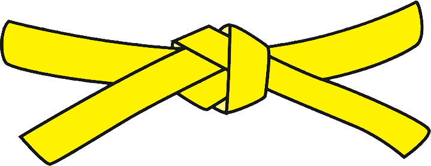
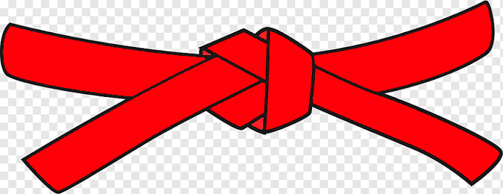
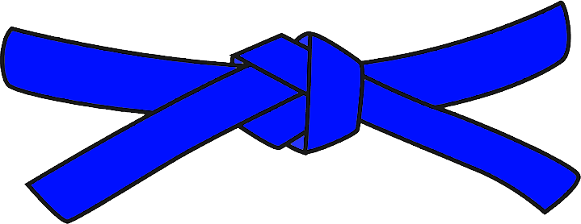
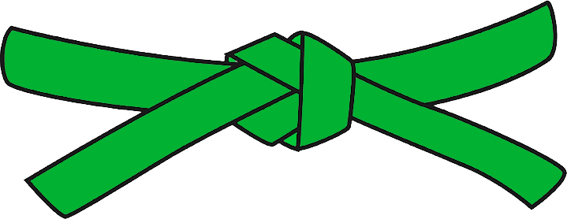
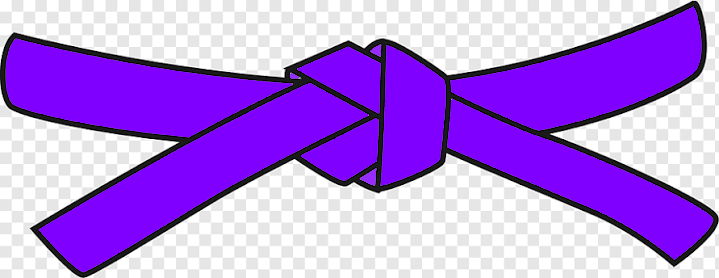
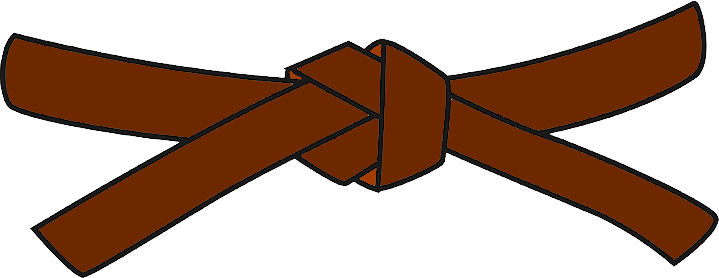
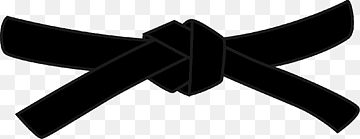

KIHON
Jodan-suki
Tchudan-suki
Ura-suki
Guedan-suki uraken tetsui
Jodan-age-uke
Tchudan-yoko-uke
Tchudan-yoko-uchi
Guedan-barai
Mae-gueri
Yoko-gueri
Mawashi-gueri



KIHON
Jodan-suki
Tchudan-suki
Ura-suki
Guedan-suki uraken tetsui
Jodan-age-uke
Tchudan-yoko-uke
Tchudan-yoko-uchi
Guedan-barai
Mae-gueri
Yoko-gueri
Mawashi-gueri
NAGUE-WAZA
Koshi-guruma
O-goshi
O-soto-gari
O-soto-guruma
Ko-uchi-gari
O-uchi-gari
Tobi-tatte-shiho-gatame
NE-WAZA
Hon-kesa-gatame
Tatte-shiho-gatame
Juji-gatame
Ude-garami
Hadaka-jime
Nami-juji-jime
Gyaku-juji-jime
Kata-juji-jime
KIHON
Nukite
Mawashi-shuto
Haito
Empi
Gyaku-suki
Jodan-hiza-uke
Shuto-uke
Guedan-shuto-uke
Shimo-mawashi-gueri
Tensho-mawashi-gueri
Ura-mawashi-gueri
NAGUE-WAZA
De-ashi-barai
Harai-goshi
Yama-arashi
Yoko-otoshi
Yoko-gake
Morote-gari
Tatte-hishigui
NE-WAZA
Yoko-shiho-gatame
Kami-shiho-gatame
Kubi-gatame
Kata-ha-jime
Ashi-hishigui
Kuri-eri-jime





